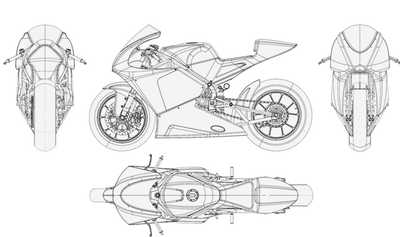
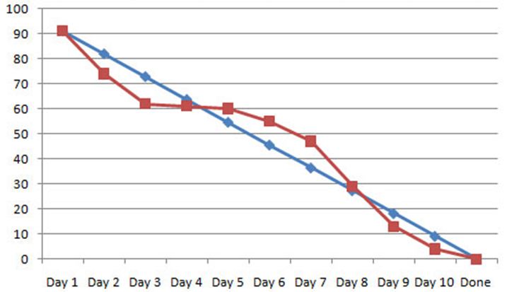

SCRUM
Gestión ágil de proyectos
#Innovacion
Un poco sobre mí
José Manuel Corral
Consultor en Tecnologías .NET, en altran.com
- Formador de HTML5
- Formador de SCRUM
- Linkedin : es.linkedin.com/in/jmanuelcorral/

Gestión de proyectos tradicional
- Alcance Fijo.
- Orientado a un plan.
- Fechas de Entrega Fijas.
- No hay interlocutor nombrado por el cliente.
- El cliente final recibe un solo entregable.
Gestión de proyectos ágil
- Se busca la respuesta al cambio.
- Existe una visión de producto por parte del cliente.
- El cliente designa a un interlocutor.
- El cliente va recibiendo incrementos entregables.
Toma de requisitos
2 Tipos de requisitos
- Software
- Sistema
Los de software los propone el cliente, y los de sistema suelen emerger del desarrollo.
¿Quien está implicado en un desarrollo?
- Product Owner.
- Equipo de desarrollo.
Habitualmente también existe la figura del ScrumMaster que lleva el peso de la gestión, pero no es necesario siempre.
Product Backlog
Vision del Producto
- Suele tener un formato de lista.
- Ha de estar Priorizada.
- Formada por Historias de Usuario.
- Se encarga de ella el PO.
Sprint Backlog
Incremento Planeado
- Consensuada por el PO y el Equipo.
- Formada por Tareas.
- Solo el Equipo la puede modificar.
Sprint Planning
Dos Reuniones
- ¿Que debería entrar en el Sprint?
- ¿A que nos podemos comprometer?
- Aclaraciones, dudas, criterios de aceptación...
Seguimiento diario
15 Minutos
- ¿Que problemas me encontré ayer?
- ¿Que problemas planeo encontrarme hoy?
- el Equipo actualiza el estado de las tareas.
Revisión Sprint
Demostración
- Indicador de progreso del sistema.
- Todo el mundo es capaz de cuantificar.
- Obtención de Feedback.
Retrospectiva
Análisis del Proceso
- Que ha salido bien.
- Que ha salido mal.
- Feedback de los usuarios.
Sprint Burn-Down
Sencillo gráfico lineal de avance del proceso.
X: Tiempo.
Y: Trabajo a Realizar.
Tablero de Kanban
No existe un formato cerrado de tablero Kanban.

Consejos
- Definir tareas, usando un rango de 2 a 16h.
- Reuniones, no existe un tiempo mínimo.
- No se recomienda hacer sprints largos (lo ideal son 2-3 semanas).
- Importante equipos cohesionados.
- No existen roles dentro del equipo.
- Equipos multidisciplinares y auto-organizados.
Más Consejos
- Utilizar técnicas de estimación ágil.
- No rendirse a la primera.
- Buscar la mejora contínua.
- PO: Construir Historias de Usuario.
- Equipo: ¡¡¡Preguntar y Preguntar!!!.
¡Gracias!
¿Preguntas?